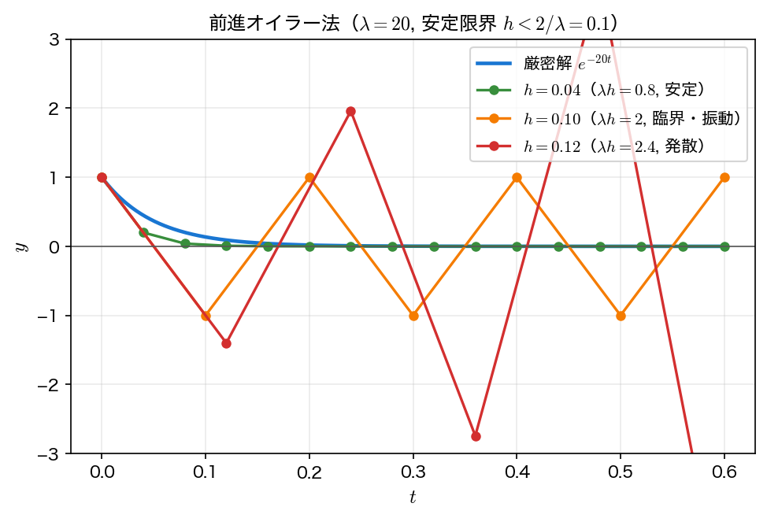
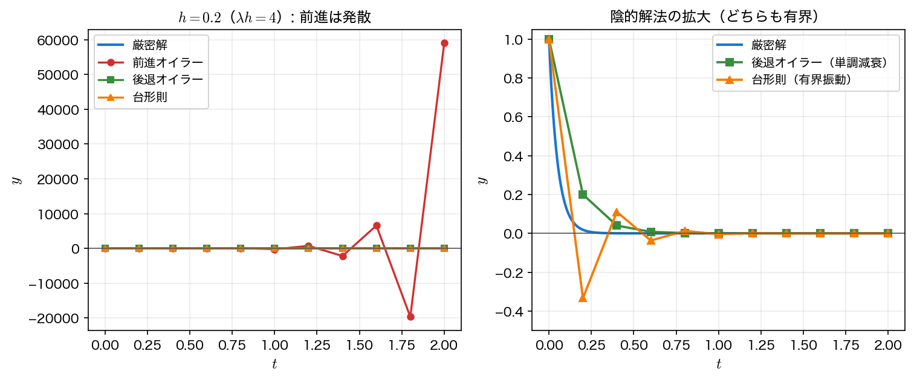

陰的解法
第4回の1段法とアダムス＝バッシュフォース法は、\(y_{n+1}\) を既知量だけの式で直接書けた（陽的）。これに対し陰的解法（implicit method）は、更新式の右辺に未知の \(y_{n+1}\) 自身を含める。前のページのアダムス＝ムルトン法もその1つである。毎ステップ方程式を解く手間が増える代わりに、はるかに安定な解法が得られ、とくに硬い問題に不可欠である。
後退オイラー法
前進オイラー法は始点 \(t_n\) の傾きで進んだ。
これに対し後退オイラー法（backward Euler method, implicit Euler method）は終点 \(t_{n+1}\) の傾きを使う。
右辺に未知の \(y_{n+1}\) が現れるので、これは \(y_{n+1}\) についての方程式である。微分を後退差分 \(y'(t_{n+1}) \approx (y_{n+1}-y_n)/h\) で近似した式とも見られる。局所打ち切り誤差は \(O(h^2)\)、大域誤差は \(O(h)\) で、前進オイラー法と同じ1次精度である。精度は同じでも、後述のとおり安定性が劇的に違う点に価値がある。
台形則
始点と終点の傾きの平均を使うと、2次精度の台形則（trapezoidal rule）になる。これはアダムス＝ムルトン法の最小段 AM1 に等しい。
\(\int_{t_n}^{t_{n+1}} f\,dt\) を台形公式で近似した形であり、名前もそこに由来する。右辺に \(y_{n+1}\) を含むので陰的である。局所打ち切り誤差 \(O(h^3)\)・大域誤差 \(O(h^2)\) の2次精度で、後退オイラー法より精度がよい。
陰的方程式の解き方
陰的解法では、各ステップで \(y_{n+1}\) についての（一般に非線形な）方程式を解く必要がある。後退オイラー法なら
を満たす \(Y = y_{n+1}\) を求める。解き方は2通りある。
不動点反復
更新式をそのまま反復に使う。
この反復は \(h\left|\partial f/\partial y\right| < 1\) のとき収束する（縮小写像）。実装は容易だが、硬い問題では \(\partial f/\partial y\) が大きく、\(h\) をごく小さくしないと収束しない——陰的解法のせっかくの安定性を活かせない。
ニュートン法
第2回・補足（多変数ニュートン法）で学んだニュートン法を \(g(Y)=0\) に適用する。
収束は2次で速く、硬い問題でも大きな \(h\) のまま数回で収束する。実用の硬い問題ソルバは、この陰的解法＋ニュートン法を組み合わせる。下のサンプルでは後退オイラー法をニュートン法で解く（例題1は \(f\) が \(y\) について線形で \(\partial f/\partial y = 1\) なので、ニュートン法は1〜2回で収束する）。
サンプルコード（1）後退オイラー法をニュートン法で
例題1を後退オイラー法で \(h=0.2\) として解く。各ステップの陰的方程式 \(g(Y)=Y-y_n-h f(t_{n+1},Y)=0\) をニュートン法で解き、反復回数も表示する。後半で \(h\) を半減させ、1次精度を誤差比で確認する。f・exact は線形多段法のサンプルと同じで、ニュートン法に使う \(\partial f/\partial y\) を dfdy として足してある。
#include <stdio.h>
#include <math.h>
/* 例題1: y' = y - t^2 + 1, y(0) = 0.5, t in [0,2] */
/* 厳密解: y(t) = (t+1)^2 - 0.5 e^t */
double f(double t, double y) { return y - t*t + 1.0; }
double exact(double t) { return (t+1.0)*(t+1.0) - 0.5*exp(t); }
/* ∂f/∂y（ニュートン法の g'(Y) に使う） */
double dfdy(double t, double y) { (void)t; (void)y; return 1.0; }
/* 後退オイラー法の1ステップ。陰的方程式
Y = y_n + h f(t_{n+1}, Y)
をニュートン法で解く。残差 g(Y) = Y - y_n - h f(t_{n+1}, Y)、
g'(Y) = 1 - h ∂f/∂y。反復回数を *iters に返す。 */
double backward_euler_step(double tn1, double yn, double h, int *iters)
{
double Y = yn; /* 初期推定: 前進オイラー的に y_n */
int k;
for (k = 0; k < 50; k++) {
double g = Y - yn - h*f(tn1, Y);
double gp = 1.0 - h*dfdy(tn1, Y);
double Ynew = Y - g/gp;
if (fabs(Ynew - Y) < 1e-12) { Y = Ynew; k++; break; }
Y = Ynew;
}
*iters = k;
return Y;
}
/* 後退オイラーで t=2 まで解いて終端値を返す */
double be_at2(double h)
{
int N = (int)(2.0/h + 0.5);
double y = 0.5;
int it;
for (int n = 0; n < N; n++)
y = backward_euler_step((n+1)*h, y, h, &it);
return y;
}
int main(void)
{
double h = 0.2;
int N = (int)(2.0/h + 0.5);
double y = 0.5;
printf("=== 後退オイラー法 (h=0.2) 陰的方程式をニュートン法で解く ===\n");
printf(" t y_BE y_exact |error| 反復\n");
printf("------------------------------------------------------------\n");
printf("%4.1f %12.8f %12.8f %10.3e -\n", 0.0, y, exact(0.0), fabs(y-exact(0.0)));
for (int n = 0; n < N; n++) {
int it;
double tn1 = (n+1)*h;
y = backward_euler_step(tn1, y, h, &it);
printf("%4.1f %12.8f %12.8f %10.3e %d\n", tn1, y, exact(tn1), fabs(y-exact(tn1)), it);
}
printf("\n=== 収束次数 (1次精度の確認) ===\n");
double ye = exact(2.0);
double hs[] = {0.2, 0.1, 0.05, 0.025};
double prev = 0;
printf(" h 数値解 y(2) 誤差 誤差比\n");
printf("--------------------------------------------------\n");
for (int i = 0; i < 4; i++) {
double yy = be_at2(hs[i]);
double e = fabs(yy - ye);
printf("%9.4f %12.8f %.4e", hs[i], yy, e);
if (i) printf(" %.2f\n", prev/e); else printf(" --\n");
prev = e;
}
printf("\n(1次精度なら誤差比は約 2)\n");
return 0;
}
コンパイルと実行：
実行結果（1）
=== 後退オイラー法 (h=0.2) 陰的方程式をニュートン法で解く ===
t y_BE y_exact |error| 反復
------------------------------------------------------------
0.0 0.50000000 0.50000000 0.000e+00 -
0.2 0.86500000 0.82929862 3.570e-02 2
0.4 1.29125000 1.21408765 7.716e-02 2
0.6 1.77406250 1.64894060 1.251e-01 2
0.8 2.30757813 2.12722954 1.803e-01 2
1.0 2.88447266 2.64085909 2.436e-01 2
1.2 3.49559082 3.17994154 3.156e-01 2
1.4 4.12948853 3.73240002 3.971e-01 2
1.6 4.77186066 4.28348379 4.884e-01 2
1.8 5.40482582 4.81517627 5.896e-01 2
2.0 6.00603228 5.30547195 7.006e-01 2
=== 収束次数 (1次精度の確認) ===
h 数値解 y(2) 誤差 誤差比
--------------------------------------------------
0.2000 6.00603228 7.0056e-01 --
0.1000 5.60989466 3.0442e-01 2.30
0.0500 5.44838574 1.4291e-01 2.13
0.0250 5.37481885 6.9347e-02 2.06
(1次精度なら誤差比は約 2)
各ステップでニュートン法は2回で収束している（\(f\) が \(y\) について線形なので実質1回で厳密に解け、判定用の追加1回で計2回）。\(h\) を半減すると誤差比が \(2.30 \to 2.06\) と理論値 \(2\) に近づき、後退オイラー法が1次精度であることが分かる。なお \(h=0.2\) での誤差 \(0.70\) は前進オイラー法（第4回、\(0.44\)）より大きいが、後退オイラー法の真価は精度ではなく次に見る安定性にある。
硬い問題と陰的解法の必要性
例題2 \(y' = -\lambda y\)（\(y(0)=1\)、厳密解 \(e^{-\lambda t}\)）で、\(\lambda = 20\) とする。解は時定数 \(1/\lambda = 0.05\) でなめらかに \(0\) へ減衰する。この問題は線形なので、3手法とも1ステップが \(y_{n+1} = r\,y_n\) の形になり、増幅率 \(r\) は手で書ける。
| 手法 | 更新式 | 増幅率 \(r\) | 安定（\(\lvert r\rvert<1\)）条件 |
|---|---|---|---|
| 前進オイラー | \(y_{n+1} = (1-\lambda h)\,y_n\) | \(1-\lambda h\) | \(h < 2/\lambda\) |
| 後退オイラー | \(y_{n+1} = y_n/(1+\lambda h)\) | \(1/(1+\lambda h)\) | 任意の \(h>0\) |
| 台形則 | \(y_{n+1} = \frac{1-\lambda h/2}{1+\lambda h/2}\,y_n\) | \(\frac{1-\lambda h/2}{1+\lambda h/2}\) | 任意の \(h>0\) |
前進オイラー法は、解の形ではなく安定性のために \(h < 2/\lambda\) を強いられる。\(\lambda\) が大きいほど刻みは極端に小さくなる。これが硬さ（stiffness）で、後退オイラー法・台形則はこの制約を受けない（無条件安定）。ただし台形則の増幅率は \(\lambda h > 2\) で負になり、値は有界のまま符号が振動する。

サンプルコード（2）硬い問題：陽的 vs 陰的
例題2の硬い問題（\(\lambda=20\)）で、前進オイラー法の刻み依存（安定限界 \(h<2/\lambda=0.1\)）と、大きな \(h=0.2\)（\(\lambda h = 4\)）での3手法（前進・後退・台形）の比較を行う。上の表の増幅率 \(r\) を関数 r_forward・r_backward・r_trapz に切り出しておく。前半のステップ数は (int)(0.6/h + 0.5) で \(0.6/h\) を四捨五入して求める。ここで使う3つの \(h\) はどれも \(0.6\) を割り切るが、割り切らない \(h\) では到達時刻 \(Nh\) が \(0.6\) からずれる（たとえば \(h=0.07\) なら \(N=9\)、到達時刻 \(0.63\)）。刻み幅を変える実験では、到達時刻がそろっているかを必ず確かめる。
#include <stdio.h>
#include <math.h>
/* 例題2 (stiff): y' = -lambda y, y(0)=1, 厳密解 y(t)=exp(-lambda t)。
ここでは lambda=20。前進オイラーの安定限界は h < 2/lambda = 0.1。 */
/* 前進オイラー法の増幅率: y_{n+1} = (1 - lambda h) y_n */
double r_forward(double lam, double h) { return 1.0 - lam*h; }
/* 後退オイラー法の増幅率: y_{n+1} = y_n / (1 + lambda h)（任意の h>0 で安定） */
double r_backward(double lam, double h) { return 1.0/(1.0 + lam*h); }
/* 台形則の増幅率: y_{n+1} = (1 - lambda h/2)/(1 + lambda h/2) y_n（有界だが lambda h>2 で符号振動） */
double r_trapz(double lam, double h) { return (1.0 - lam*h/2.0)/(1.0 + lam*h/2.0); }
int main(void)
{
double lam = 20.0;
printf("lambda = %.1f, 前進オイラー安定限界 h < 2/lambda = %.3f\n\n", lam, 2.0/lam);
/* 作図用データ。1行 = (刻み幅, 時刻, 数値解, 厳密解) の「縦持ち」形式 */
FILE *fe = fopen("stiff_explicit.dat", "w");
if (fe == NULL) { perror("stiff_explicit.dat"); return 1; }
fprintf(fe, "# h t y_forward y_exact\n");
/* (1) 前進オイラーの刻み依存: t=0.6 まで、いくつかの h */
double hs[] = {0.04, 0.10, 0.12}; /* lambda h = 0.8(安定), 2.0(臨界), 2.4(発散) */
printf("=== 前進オイラー y_{n+1}=(1-lambda h)y_n の t=0.6 での値 ===\n");
printf(" h lambda*h 増幅率(1-lh) y(0.6)数値 y(0.6)厳密\n");
printf("---------------------------------------------------------------\n");
for (int i = 0; i < 3; i++) {
double h = hs[i];
int N = (int)(0.6/h + 0.5);
double r = r_forward(lam, h);
double y = 1.0;
for (int n = 0; n < N; n++) {
fprintf(fe, "%.4f %.6f %.10e %.10e\n", h, n*h, y, exp(-lam*n*h));
y = r*y;
}
fprintf(fe, "%.4f %.6f %.10e %.10e\n", h, N*h, y, exp(-lam*N*h));
printf("%6.3f %6.2f %8.2f %12.4e %12.4e\n",
h, lam*h, r, y, exp(-lam*0.6));
}
fclose(fe);
/* (2) 大きな h=0.2 (lambda h=4) で 3手法を比較 */
double h = 0.2;
int N = (int)(2.0/h + 0.5);
double yf = 1.0, yb = 1.0, yt = 1.0;
double rf = r_forward(lam, h);
double rb = r_backward(lam, h);
double rt = r_trapz(lam, h);
printf("\n=== h=0.2 (lambda h=4) 増幅率: 前進=%.3f, 後退=%.4f, 台形=%.4f ===\n", rf, rb, rt);
FILE *fc = fopen("stiff_compare.dat", "w");
if (fc == NULL) { perror("stiff_compare.dat"); return 1; }
fprintf(fc, "# t y_forward y_backward y_trapezoid y_exact\n");
printf(" t 前進オイラー 後退オイラー 台形則 厳密解\n");
printf("------------------------------------------------------------------------\n");
for (int n = 0; n <= N; n++) {
double t = n*h;
printf("%5.1f %14.4e %12.6e %12.4e %10.3e\n",
t, yf, yb, yt, exp(-lam*t));
fprintf(fc, "%.6f %.10e %.10e %.10e %.10e\n",
t, yf, yb, yt, exp(-lam*t));
yf = rf*yf; yb = rb*yb; yt = rt*yt;
}
fclose(fc);
return 0;
}
コンパイルと実行：
実行結果（2）
lambda = 20.0, 前進オイラー安定限界 h < 2/lambda = 0.100
=== 前進オイラー y_{n+1}=(1-lambda h)y_n の t=0.6 での値 ===
h lambda*h 増幅率(1-lh) y(0.6)数値 y(0.6)厳密
---------------------------------------------------------------
0.040 0.80 0.20 3.2768e-11 6.1442e-06
0.100 2.00 -1.00 1.0000e+00 6.1442e-06
0.120 2.40 -1.40 -5.3782e+00 6.1442e-06
=== h=0.2 (lambda h=4) 増幅率: 前進=-3.000, 後退=0.2000, 台形=-0.3333 ===
t 前進オイラー 後退オイラー 台形則 厳密解
------------------------------------------------------------------------
0.0 1.0000e+00 1.000000e+00 1.0000e+00 1.000e+00
0.2 -3.0000e+00 2.000000e-01 -3.3333e-01 1.832e-02
0.4 9.0000e+00 4.000000e-02 1.1111e-01 3.355e-04
0.6 -2.7000e+01 8.000000e-03 -3.7037e-02 6.144e-06
0.8 8.1000e+01 1.600000e-03 1.2346e-02 1.125e-07
1.0 -2.4300e+02 3.200000e-04 -4.1152e-03 2.061e-09
1.2 7.2900e+02 6.400000e-05 1.3717e-03 3.775e-11
1.4 -2.1870e+03 1.280000e-05 -4.5725e-04 6.914e-13
1.6 6.5610e+03 2.560000e-06 1.5242e-04 1.266e-14
1.8 -1.9683e+04 5.120000e-07 -5.0805e-05 2.320e-16
2.0 5.9049e+04 1.024000e-07 1.6935e-05 4.248e-18
前半：前進オイラー法は \(h=0.04\)（\(\lambda h=0.8\)）なら安定で単調に \(0\) へ向かう。ただし増幅率 \(0.2\) は厳密な倍率 \(e^{-0.8}=0.449\) の半分以下で、数値解は減りすぎる。\(t=0.6\)（15ステップ）では厳密解 \(6.1442\times10^{-6}\) に対し \(0.2^{15}=3.2768\times10^{-11}\) ——5桁ずれている。\(\lvert r\rvert<1\) は「発散しない」ことしか保証せず、精度は別に確かめなければならない（この意味で「安定なら十分」ではない）。\(h=0.10\)（臨界）では増幅率 \(-1\) で \(\pm1\) を振動し、\(h=0.12\)（\(\lambda h=2.4\)）では増幅率 \(-1.4\) で発散する。
後半：\(h=0.2\)（\(\lambda h=4\)）という大きな刻みでは、前進オイラー法は増幅率 \(-3\) で激しく振動・発散し \(t=2\) で \(5.9\times10^4\) に達する。一方、後退オイラー法は増幅率 \(0.2\) で正のまま単調減衰し、台形則は増幅率 \(-1/3\) で有界だが符号が交代しながら減衰する。陰的解法はどちらも発散しない。

可視化
stiff.c は2つのデータファイルを書き出す。stiff_explicit.dat は前進オイラー法の時間発展で、1行が \((h, t, y_{\rm num}, y_{\rm exact})\) の縦持ち（同じファイルに3つの \(h\) を並べ、1列目で区別する）。stiff_compare.dat は \(h=0.2\) での3手法の比較で、1行が \((t, y_{\rm forward}, y_{\rm backward}, y_{\rm trapezoid}, y_{\rm exact})\) である。
import numpy as np
import matplotlib.pyplot as plt
ex = np.loadtxt("stiff_explicit.dat")
cm = np.loadtxt("stiff_compare.dat")
fig, axes = plt.subplots(1, 2, figsize=(11, 4.4))
# 左: 前進オイラーの刻み依存（h ごとに行を選び出す）
ax = axes[0]
for h in np.unique(ex[:, 0]):
rows = ex[ex[:, 0] == h]
ax.plot(rows[:, 1], rows[:, 2], "o-", ms=4,
label=f"$h = {h:.2f}$ ($\\lambda h = {20 * h:.1f}$)")
t = np.linspace(0.0, 0.6, 200)
ax.plot(t, np.exp(-20.0 * t), "k-", lw=1, label="exact")
ax.set_xlabel("$t$")
ax.set_ylabel("$y$")
ax.set_title("forward Euler: stability limit $h < 2/\\lambda = 0.1$")
ax.legend(fontsize=9)
# 右: h = 0.2 での3手法（振動と発散を見るので symlog 目盛）
ax = axes[1]
ax.plot(cm[:, 0], cm[:, 1], "o-", ms=4, label="forward Euler")
ax.plot(cm[:, 0], cm[:, 2], "s-", ms=4, label="backward Euler")
ax.plot(cm[:, 0], cm[:, 3], "^-", ms=4, label="trapezoidal")
ax.plot(cm[:, 0], cm[:, 4], "k-", lw=1, label="exact")
ax.set_yscale("symlog", linthresh=1e-6)
ax.set_xlabel("$t$")
ax.set_ylabel("$y$")
ax.set_title("$h = 0.2$ ($\\lambda h = 4$)")
ax.grid(alpha=0.3)
ax.legend(fontsize=9)
fig.tight_layout()
fig.savefig("stiff.png", dpi=150)
plt.show()
実行:
右のグラフは前進オイラー法の値が \(\pm10^5\) まで振れる一方で厳密解は \(10^{-18}\) まで落ちるので、通常の線形目盛では何も見えない。symlog（原点付近だけ線形、外側は対数）を使うと、発散・単調減衰・符号振動の3つを1枚に収められる。
まとめ
- 後退オイラー法（終点の傾き・1次）と台形則（傾きの平均・2次・＝AM1）は、右辺に未知の \(y_{n+1}\) を含む陰的解法である。
- 陰的方程式は不動点反復（\(h|\partial f/\partial y|<1\) で収束、硬い問題では破綻）かニュートン法（速く、硬い問題でも大きな \(h\) で収束）で解く。
- 硬い問題では陽解法が安定性のために \(h<2/\lambda\) を強いられるのに対し、陰的解法は無条件に安定で大きな刻みが使える。これが陰的解法の存在理由である。ただし安定は正確を意味しない。
- 台形則は無条件に有界でも \(\lambda h>2\) で符号が振動する。「有界」と「単調」は別物で、安定性の細かな分類は次回（第6回 安定性解析）で扱う。
- 陰的方程式を毎回反復で解くコストを、陽的予測で省くのが次の予測子・修正子法である。